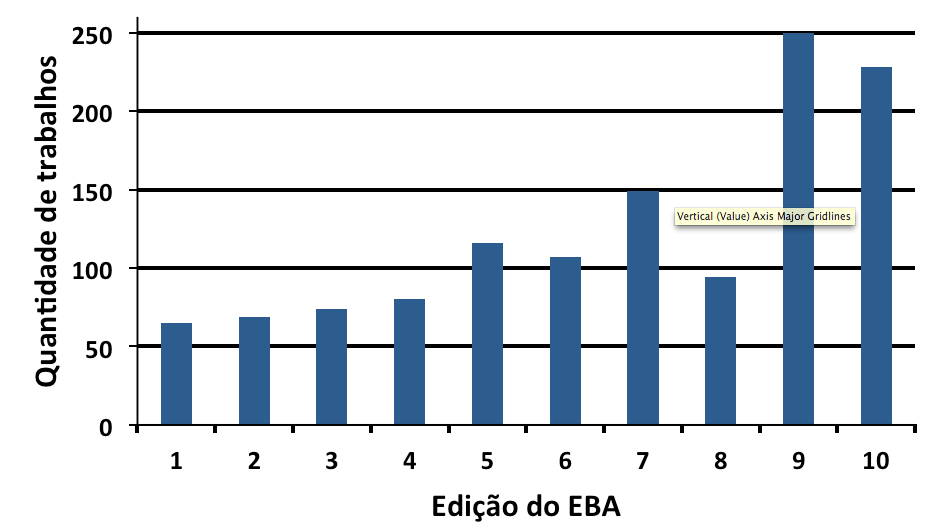

Confira o histórico de 20 anos de EBA
Visão geral dos trabalhos apresentados
Uma visão geral da quantidade de trabalhos apresentados nas últimas edições do EBA está apresentada na Figura 1. Com exceção da oitava edição, percebe-se uma clara tendência de crescimento do evento ao longo dos anos. Acredita-se que o aumento da quantidade de trabalhos da edição EBA 9 foi originado devido à realização simultânea do EBA9 e do IBA1. Por outo lado, conforme mencionado anteriormente, a queda de trabalhos ocorrida no EBA 8 é atribuída à realização conjunta com o COBEQ e CBTERMO. Destaca-se o número de trabalhos apresentados na edição EBA 10, em que foram apresentados 228 trabalhos em uma edição onde ocorreu somente o EBA, isso mostra o crescente interesse e interação na área de adsorção por diversas instituições e pesquisadore
Durante a solenidade de encerramento do EBA 10, foi decidido que o Instituto de Tecnologia e Pesquisa (ITP – Aracaju-SE) foi aclamado como entidade organizadora da 11ª edição do evento, tendo como coordenadora geral o Prof. Dra. Odelsia Leonor Sánchez de Alsina.
Tabela de histórico
| Evento | Data | Local | |
|---|---|---|---|
| EBA 1 | Julho de 1996 | Fortaleza/CE (UFC) | |
| EBA 2 | Maio de 1998 | Florianópolis/SC (UFSC) | |
| EBA 3 | Julho de 2000 | Recife/PE (UFPE) | |
| EBA 4 | Maio de 2002 | Rio de Janeiro/RJ (UFRRJ) | |
| EBA 5 | 18 a 21 de julho de 2004 | Natal/RN (UFRN) | |
| EBA 6 | 13 a 16 de Agosto de 2006 | Maringá/PR (UEM) | pageswebsite |
| EBA 7 | 25 de 27 junho de 2008 | Campina Grande/PB (UFCG) | pageswebsite |
| EBA 8 | 19 a 22 de setembro de 2010 | Foz do Iguaçu/PR (UNICAMP/UEM) | |
| EBA 9 | 06 a 10 de maio de 2012 | Recife/PE (UFPE/UFC) | pageswebsite |
| EBA 10 | 27 a 30 de Abril de 2014 | Guarujá/SP Unifesp | pageswebsite |